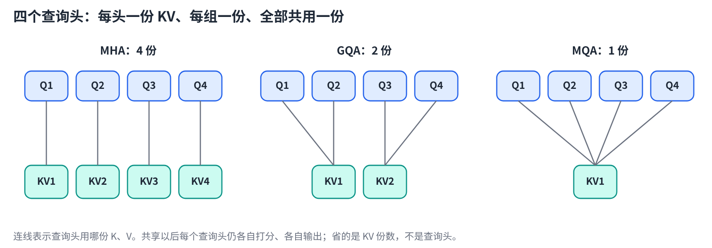
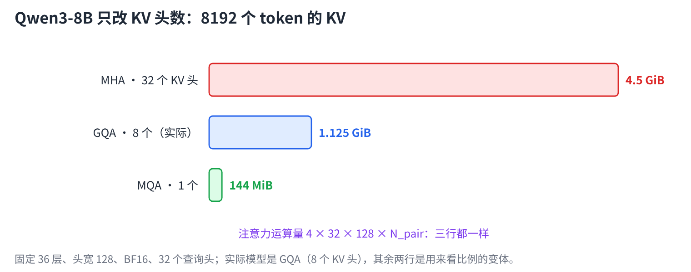
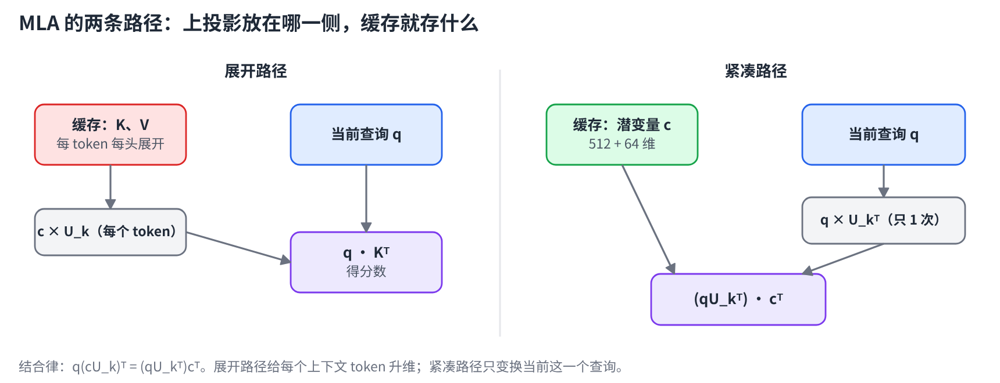
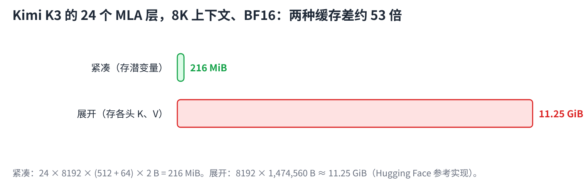
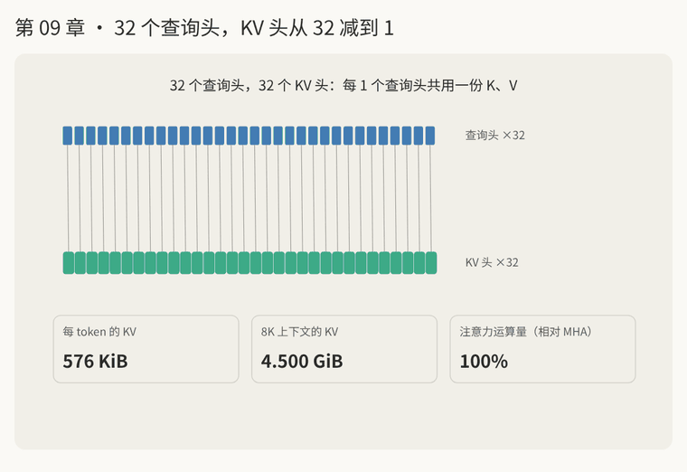

第 09 章 · KV 怎么变小 ①：头共享与潜变量压缩
本地运行
git clone https://github.com/wikieden/ai-infra-from-constraints
cd ai-infra-from-constraints/code/notebooks
pip install jupyterlab torch numpy
jupyter lab ch09_kv_sharing.ipynb也可以下载后直接用 VS Code 打开 .ipynb 运行。需要 GPU 的章节在 Colab 里选「代码执行程序 → 更改运行时类型 → GPU」。
本章回答：KV 缓存太大，有哪两种"直接给每个 token 瘦身"的办法？GQA、MQA 省了什么、没省什么？MLA 为什么能只存一个 512 维的小向量，还算出同样的注意力？
讲解日期：2026-11-24 · 上一章：第 08 章 自回归生成的资源账 · 下一章：第 10 章 KV 怎么变小 ②
对应原文：materials/ai-infra-book/manuscripts/02-模型架构.md§2.3 引言 L302–L308、§2.3.1 L310–L330、§2.3.2 L332–L356（图 2-9 到 2-12）
本章缩写：BF16 = Brain Float 16（Google Brain 提出的 / 浮点 / 16 位）· GQA = Grouped-Query Attention（分组 / 查询 / 注意力）· KDA = Kimi Delta Attention（Kimi 的 / 增量修正 / 注意力，第 10 章）· KV = Key-Value（键 / 值）· MHA = Multi-Head Attention（多 / 头 / 注意力）· MLA = Multi-head Latent Attention（多头 / 潜变量 / 注意力）· MQA = Multi-Query Attention（多 / 查询 / 注意力）· NoPE = No Positional Encoding（不加 / 位置 / 编码）· RoPE = Rotary Position Embedding（旋转 / 位置 / 编码）。全部缩写见 缩写与术语表
第 08 章说，长上下文下 KV 读取很快超过权重读取。第 09、10 章看模型这一侧怎么让 KV 变小。本章是"每个 token 还存一份，但存得更瘦"；下一章是"不再每个 token 都存"。
讲解
第一步：上下文状态的两种记法（2026-11-24）
类比：读一本书时做笔记。 一种是每页记一条（随书变厚），要查哪页就翻哪页；另一种是只留一张摘要卡（大小固定），每读一页就改写一次，但找不回某一页的全部细节。
原文 L304–L308：模型处理过上下文以后保存、供后续复用的表示，叫上下文状态。比较各种机制时问两件事：历史留下了什么，新的一步怎么取到要的信息。
| 改什么 | 办法 | 本书哪章 |
|---|---|---|
| 每个 token 存的宽度 | 共享 KV 头（GQA / MQA）、潜变量压缩（MLA） | 本章 |
| 存多少个条目 | 局部窗口、多个 token 压成一条、先筛选再读 | 第 10 章 |
| 不按 token 存 | 固定大小的递推状态（线性注意力） | 第 10 章 |
节省的存储和读取，要和新增的选择、压缩、更新工作一起算。
一句话：上下文状态要么逐 token 记、要么改写一张摘要；本章先看"逐 token 记，但每条记得更瘦"。
第二步：MHA、GQA、MQA：几个查询头共用一份 K、V（2026-11-24）
类比：一个办公室几个人共用一台打印机。 每人一台（MHA）最方便但占地方；每两人一台（GQA）；全办公室一台（MQA）最省地方。打印机少了，但每个人要打印的内容还是各打各的。
原文 L312–L314：
| 方式 | 4 个查询头时存几份 KV | 每个查询头还单独打分吗 |
|---|---|---|
| MHA（多头） | 4 | 是 |
| GQA（分组，每 2 个一组） | 2 | 是 |
| MQA（全部共用一份） | 1 | 是 |

图 9-1 · 连线表示哪个查询头用哪份 K、V。共享以后，每个查询头仍对同一段上下文打出自己的分数、得到自己的输出。
省了什么、没省什么（原文 L322–L324）：
- \(n_{\mathrm{KV}}\) 减半 → \(K\)、\(V\) 投影参数减半，KV 缓存减半（第 08 章 \(c_{\mathrm{KV}} = 2Ln_{\mathrm{KV}}d_hb\)）。
- \(n_Q\) 不变 → \(QK^{\mathsf T}\) 和 \(AV\) 的运算量不变，还是按 32 个查询头算（第 07 章 \(F_{\mathrm{attn}} = 4n_Qd_hN_{\mathrm{pair}}\)）。
- 一次读进来的 \(K\)、\(V\) 被同组几个查询头复用，读一次算几次。
例子（原文 L320）：Qwen3-8B，32 个查询头，8192 个上下文 token，BF16。
| 结构 | KV 头数 | 8K 上下文的 KV |
|---|---|---|
| MHA（变体） | 32 | 4.5 GiB |
| GQA（实际，每 4 个一组） | 8 | 1.125 GiB |
| MQA（变体） | 1 | 144 MiB |

图 9-2 · 固定层数、头宽、8192 个 token 和 BF16，只改 KV 组数；柱高之比就是共享比例。
基础设施反过来影响模型设计（原文 L330）：MQA 的原论文直接把增量推理的内存带宽开销作为动机；GQA 在 MHA 的质量和 MQA 的速度之间折中。减少 KV 头既改了模型能表达的注意力关系，也减少了服务端要存、要读的状态。
一句话：GQA / MQA 减少的是 KV 的份数，不是查询头的数量：缓存和 KV 投影按组数减少，注意力运算量照旧。
第三步：MLA：只存一个低维潜变量，用结合律换个顺序算（2026-11-24）
类比：寄压缩包。 不把每个文件都展开寄出去，而是寄一个压缩包；收件人要看的时候，可以先解压再看（展开路径），也可以直接用支持压缩格式的工具看（紧凑路径），内容一样。
原文 L334：MLA 把输入先投影成低维潜变量 \(c\)，再用上投影 \(U_k\)、\(U_v\) 得到注意力用的 \(K\)、\(V\)；生成时只存 \(c\)。
公式（原文 L343）：展开的键 \(K = cU_k\)。矩阵乘法的结合律：
- 左边（展开路径）：给每个上下文 token 都把 \(c\) 升维成 \(K\)，再和 \(q\) 点积。
- 右边（紧凑路径）：先把当前这一个查询 \(q\) 变换成 \(qU_k^{\mathsf T}\)，再直接和存着的低维 \(c\) 点积。
- 值也一样：先用注意力权重把低维 \(c\) 加权汇总，再上投影一次。原来"对每个上下文 token 升维"，变成"对当前查询和汇总结果各变换一次"。

图 9-3 · 两条路径算出同一个分数，区别在上投影放在哪一侧，于是缓存存的是展开后的 K、V 还是展开前的 c。
例子（编的小数，验证结合律）：两个上下文 token 的潜变量 \(c = \begin{bmatrix}1 & 0\\ 2 & 1\end{bmatrix}\)（每行一个 token，2 维），上投影 \(U_k = \begin{bmatrix}1 & 0 & 2\\ 0 & 1 & 1\end{bmatrix}\)（2 维升到 3 维），查询 \(q = [1, 1, 1]\)。
| 路径 | 算法 | 结果 |
|---|---|---|
| 展开 | \(K = cU_k = \begin{bmatrix}1 & 0 & 2\\ 2 & 1 & 5\end{bmatrix}\)，\(qK^{\mathsf T} = [3, 8]\) | [3, 8] |
| 紧凑 | \(qU_k^{\mathsf T} = [3, 2]\)，再乘 \(c^{\mathsf T}\)：\([3 \times 1 + 2 \times 0,\ 3 \times 2 + 2 \times 1]\) | [3, 8] |
紧凑路径缓存里存的是 2 维的 \(c\)，展开路径要存 3 维的 \(K\)；上下文越长，省得越多。
真实模型（原文 L348–L350）：Kimi K3 用门控 MLA（Gated MLA），每个 token 存 512 维潜变量 + 64 维额外分支（Kimi K3 的 MLA 层不加 RoPE，即 NoPE，但这 64 维仍然投影并缓存）。
| 缓存路径 | 每 token 存 | 24 个 MLA 层、8192 token、BF16 |
|---|---|---|
| 紧凑（存潜变量） | \((512 + 64) \times 2 = 1152\) 字节 / 层 | \(24 \times 8192 \times 576 \times 2\) = 216 MiB |
| 展开（存各头的 K、V） | 每 token 共 1,474,560 字节 | ≈ 11.25 GiB |

图 9-4 · 同一模型、同一 8K 上下文，只看缓存放在上投影的哪一侧，差约 53 倍。
代价（原文 L356）：每个 token 还是要存一个潜变量，存储量和点积运算量仍随上下文增长；上下文短时，每步对查询做的变换占比更高。
场景代码：在 PyTorch 里直接验证两条路径一样（真实尺寸的一个头）：
import torch
torch.manual_seed(0)
H, d_c, d_h = 8192, 512, 128 # 上下文长度、潜变量维度、头维度
c = torch.randn(H, d_c, dtype=torch.float64) # 缓存里存的潜变量（每行一个 token）
U_k = torch.randn(d_c, d_h, dtype=torch.float64)
q = torch.randn(1, d_h, dtype=torch.float64) # 当前这一个查询
expanded = q @ (c @ U_k).T # 展开：给 8192 个 token 都升维
compact = (q @ U_k.T) @ c.T # 紧凑：只变换 1 个查询
print(torch.allclose(expanded, compact)) # True
一句话：MLA 用结合律把上投影从"每个上下文 token"挪到"当前查询"上，缓存只存低维潜变量；Kimi K3 的 8K 上下文因此从 11.25 GiB 降到 216 MiB。
动画演示：32 个查询头，KV 头从 32 减到 1

可交互版：animations/09-kv-sharing.html（滑块：KV 头数 1 / 2 / 4 / 8 / 16 / 32；固定 Qwen3-8B 的 36 层、头宽 128、8192 个 token、BF16）。
怎么看：
- 上排 32 个查询头，下排是 KV 头，连线是谁用谁（第二步）；
- 右边三个数：每 token 的 KV、8K 上下文的 KV、注意力运算量（单层，相对 MHA）；
- 播放时 KV 头从 32 → 8 → 1：KV 大小按比例减少，注意力运算量那一栏一直是 100%；
- 最后一帧换成 MLA 紧凑路径，和 GQA 并排比较（第三步）。
练习与作答记录
题 1（第二步）：一个模型 40 层、40 个查询头、头宽 128，KV 用 BF16。分别算 MHA、每 5 个查询头一组的 GQA、MQA 下，每个 token 的 KV 字节数。改成 GQA 以后，\(QK^{\mathsf T}\) 的运算量变了吗？
作答记录：（待作答）
题 2（第三步）：\(c = \begin{bmatrix}1 & 1\\ 0 & 2\end{bmatrix}\)，\(U_k = \begin{bmatrix}2 & 1 & 0\\ 1 & 0 & 1\end{bmatrix}\)，\(q = [1, 2, 1]\)。分别用展开路径和紧凑路径算 \(qK^{\mathsf T}\)，验证两者相等。哪条路径要缓存的数少？
作答记录：（待作答）
题 3（第三步）：Kimi K3 的 24 个 MLA 层，上下文 32768 个 token，BF16。紧凑路径和展开路径各要多少？（每 token 展开后 1,474,560 字节。）
作答记录：（待作答）
原书练习 2-4 前半（L390–L392：Qwen3-8B 的 KV 头从 8 改成 4）。想多练可以做。
口诀
逐页笔记随书厚，摘要一张常改写；
打印机少人不少，KV 份数减、查询头不减；
压缩包里存潜变量，结合律把升维挪到查询上。
本章复习卡片
I31（MHA / GQA / MQA 省了什么、没省什么）、I32（MLA 的结合律与紧凑路径）、I33（Kimi K3 MLA 的两种缓存大小）。练习做完后，按答错、卡住的地方再补。
附录 · 延伸阅读
留给以后深入学习用，不影响本章主线。★ 是建议先读的。
推荐阅读
| 读什么 | 读哪里 | 读它为了什么 |
|---|---|---|
| ★ AII 第 2 章 | §2.3.1–§2.3.2 L302–L356 | 本章原文，图 2-9 到 2-12 |
| ★ Shazeer, Fast Transformer Decoding: One Write-Head is All You Need（2019） | 摘要、第 1 节 | MQA 的原论文，动机就是增量推理的内存带宽（原文脚注 [^codesign]） |
| Ainslie 等, GQA（2023） | 第 2 节 | GQA 怎么在 MHA 质量和 MQA 速度之间折中，以及从 MHA checkpoint 上训练 |
| DeepSeek-V2 技术报告 | MLA 一节 | MLA 的原始设计与"吸收"上投影的推导 |
AII 计算结果 calculations/results/kv-comparison-n8192-b1.md |
全文 | 各模型两种缓存路径的精确字节数 |
| 《从零读懂 Transformer》第 13 章 | 全章 | 多头注意力本身 |
数学原理
- 矩阵乘法结合律：\((AB)C = A(BC)\)，而 \((XY)^{\mathsf T} = Y^{\mathsf T}X^{\mathsf T}\)；所以 \(q(cU)^{\mathsf T} = qU^{\mathsf T}c^{\mathsf T}\)。改变的是先算哪一步、哪一侧的中间结果更小。
- 按比例缩放：KV 大小和 \(n_{\mathrm{KV}}\) 成正比；注意力运算量和 \(n_Q\) 成正比，两者独立。
公式清单
| 公式 | 意思 |
|---|---|
| \(c_{\mathrm{KV}} = 2\,L\,n_{\mathrm{KV}}\,d_h\,b\) | 每 token 的 KV，随 KV 头数线性变化 |
| \(F_{\mathrm{attn}} = 4\,n_Q\,d_h\,N_{\mathrm{pair}}\) | 注意力运算，随查询头数变化，与 KV 头数无关 |
| \(qK^{\mathsf T} = (qU_k^{\mathsf T})\,c^{\mathsf T}\) | MLA 的紧凑路径 |
| MLA 紧凑缓存 \(= L_{\mathrm{MLA}} \times H \times (d_c + d_r) \times b\) | Kimi K3：\(d_c = 512\)，\(d_r = 64\) |
代码对照：把本章的数字用代码算一遍
纯 Python，不需要 GPU。代码在仓库本地
ai-infra/solutions/chapter-code/ch09_kv_sharing.py，配套测试tests/test_ch09.py：
bash cd ai-infra/solutions/chapter-code uv run python ch09_kv_sharing.py # 一步一步打印 uv run pytest tests/test_ch09.py
讲义 ↔ 代码：
| 讲义 | 公式 | 写法 | 跑出来 |
|---|---|---|---|
| 第二步 Qwen3-8B 三种结构 | \(2Ln_{\mathrm{KV}}d_hbH\) | kv_gib(n_kv) |
4.5、1.125、0.140625 GiB |
| 第二步 注意力运算量 | \(4n_Qd_hN_{\mathrm{pair}}\) | attn_flops_per_pair(n_q=32) |
16384（与 KV 头数无关） |
| 第三步 小例子 | 两条路径 | scores_expanded(c, U, q)、scores_compact(c, U, q) |
[3, 8] 和 [3, 8] |
| 第三步 Kimi K3 | \(24 \times 8192 \times 576 \times 2\) | mla_compact_mib(8192)、mla_expanded_gib(8192) |
216 MiB、11.25 GiB |
关键几行：
def scores_expanded(c, U, q):
K = matmul(c, U) # 每个上下文 token 都升维
return matmul([q], transpose(K))[0]
def scores_compact(c, U, q):
qU = matmul([q], transpose(U))[0] # 只变换当前这一个查询
return matmul([qU], transpose(c))[0] # 直接和潜变量点积
代码里才看得到的 3 件事：
- 小例子用整数，两条路径结果完全相等；真实浮点计算顺序不同会有舍入误差，场景代码用
allclose并改成 float64。 kv_gib里 MQA 的 0.140625 GiB 就是 144 MiB，换单位时注意 1 GiB = 1024 MiB。- MLA 紧凑缓存的 576 维里，64 维是额外分支；只算 512 维会少算 11%。
自己改一改（不影响练习答案）：
- 把
kv_gib的上下文从 8192 改成 131072（128K），看三种结构各多大。 - 随机生成更大的
c、U、q，验证两条路径仍然相等。 - 比较紧凑路径每步的额外工作：给 1 个查询做 \(128 \times 512\) 的变换，和给 8192 个 token 都升维相比差多少倍。